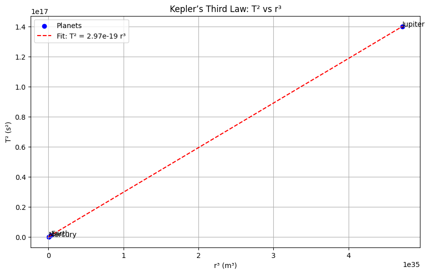

# Problem 1
: Projectile Motion and Kepler’s Laws
Motivation
Projectile motion and orbital mechanics are foundational in physics, illustrating Newton’s and Kepler’s laws. While projectile motion demonstrates motion under constant gravity, Kepler’s laws describe planetary orbits, connecting period $ T $ and semi-major axis $r $ to gravitational forces.
1. Theoretical Foundation
Governing Equations
A projectile launched with velocity $ v_0 $ at angle $ \theta $, under gravity $ g $, has: - Horizontal velocity: $ v_{x0} = v_0 \cos\theta $ - Vertical velocity: $ v_{y0} = v_0 \sin\theta $ - Accelerations: $ a_x = 0 $, $ a_y = -g $ - Positions: - $ x(t) = v_0 \cos\theta \, t $ - $ y(t) = v_0 \sin\theta \, t - \frac{1}{2} g t^2 $
Time of Flight
Set $ y(t) = 0 $: $$ v_0 \sin\theta \, t - \frac{1}{2} g t^2 = 0 \quad \Rightarrow \quad t \left( v_0 \sin\theta - \frac{1}{2} g t \right) = 0 $$ Solutions: $ t = 0 $ or $ t = \frac{2 v_0 \sin\theta}{g} $.
Range
Range $ R $ at $ t = \frac{2 v_0 \sin\theta}{g} $: $$ R = v_0 \cos\theta \cdot \frac{2 v_0 \sin\theta}{g} = \frac{v_0^2 \sin 2\theta}{g} $$
2. Kepler’s Laws and Orbital Mechanics
1) Derivation of $ T^2 $ Formula (Kepler’s Third Law)
Kepler’s Third Law states: The square of the orbital period $ T $ is proportional to the cube of the semi-major axis $ r $: $$ T^2 \propto r^3 $$ For a planet orbiting a central mass $ M $ (e.g., the Sun), assume a circular orbit (approximation, $ r $ as semi-major axis): - Centripetal force: $ F_c = \frac{m v^2}{r} $, where $ v = \frac{2\pi r}{T} $. - Gravitational force: $ F_g = \frac{G M m}{r^2} $. Equate forces: $$ \frac{m v^2}{r} = \frac{G M m}{r^2} $$ Cancel $ m $ and substitute $ v $: $$ \frac{m \left( \frac{2\pi r}{T} \right)^2}{r} = \frac{G M m}{r^2} \quad \Rightarrow \quad \frac{4\pi^2 r^2}{T^2 r} = \frac{G M}{r^2} \quad \Rightarrow \quad \frac{4\pi^2 r}{T^2} = \frac{G M}{r^2} $$ Simplify: $$ \frac{4\pi^2}{T^2} = \frac{G M}{r^3} \quad \Rightarrow \quad T^2 = \frac{4\pi^2}{G M} r^3 $$ Thus: $$ T^2 = k r^3, \quad \text{where} \quad k = \frac{4\pi^2}{G M} $$
2) $ T^2 $ vs $ r^3 $ Plot
We’ll plot $ T^2 $ vs $ r^3 $ for planets, expecting a straight line since $ T^2 = k r^3 $.
3) Planetary Data
Using data for Mercury, Earth, and Jupiter: - Mercury: $ r = 5.79 \times 10^{10} \, \text{m} $, $ T = 88 \, \text{days} $. - Earth: $r = 1.496 \times 10^{11} \, \text{m} $, $ T = 365.25 \, \text{days} $. - Jupiter: $ r = 7.785 \times 10^{11} \, \text{m} $, $ T = 4333 \, \text{days} $.
4) Mass Calculations Using Kepler’s Law
Mass of Earth (Using Moon’s Orbit)
- Moon’s orbit: $ r = 3.844 \times 10^8 \, \text{m} $, $ T = 27.32 \, \text{days} $.
- Use $ T^2 = \frac{4\pi^2}{G M_E} r^3 $: $$ M_E = \frac{4\pi^2 r^3}{G T^2} $$
- $ G = 6.6743 \times 10^{-11} \, \text{m}^3 \text{kg}^{-1} \text{s}^{-2} $.
Mass of Sun (Using Earth’s Orbit)
- Earth’s orbit: $ r = 1.496 \times 10^{11} \, \text{m} $, $ T = 365.25 \, \text{days} $.
- Use the same formula: $$ M_S = \frac{4\pi^2 r^3}{G T^2} $$
3. Practical Applications
- Astronomy: Kepler’s laws help determine masses of celestial bodies.
- Space Missions: Trajectory planning (e.g., Mars missions adjust for $ g $).
- Physics Education: Visualizing $ T^2 \(-vs-\) r^3 $ relationship.
4. Implementation
Below is the Python code for plotting $ T^2 $ vs $ r^3 $, calculating masses, and creating a GIF of a projectile trajectory.

